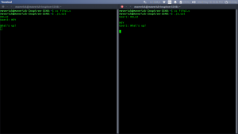
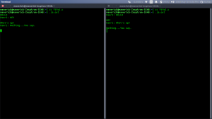

In computing, a named pipe (also known as a FIFO) is one of the methods for intern-process communication.
- It is an extension to the traditional pipe concept on Unix. A traditional pipe is “unnamed” and lasts only as long as the process.
- A named pipe, however, can last as long as the system is up, beyond the life of the process. It can be deleted if no longer used.
- Usually a named pipe appears as a file, and generally processes attach to it for inter-process communication. A FIFO file is a special kind of file on the local storage which allows two or more processes to communicate with each other by reading/writing to/from this file.
- A FIFO special file is entered into the filesystem by calling mkfifo() in C. Once we have created a FIFO special file in this way, any process can open it for reading or writing, in the same way as an ordinary file. However, it has to be open at both ends simultaneously before you can proceed to do any input or output operations on it.
Creating a FIFO file
In order to create a FIFO file, a function calls i.e. mkfifo is used.
int mkfifo(const char *pathname, mode_t mode);
mkfifo() makes a FIFO special file with name pathname. Here mode specifies the FIFO’s permissions. It is modified by the process’s umask in the usual way: the permissions of the created file are (mode & ~umask).
Using FIFO
As named pipe(FIFO) is a kind of file, we can use all the system calls associated with it i.e. open, read, write, close.
Example Programs to illustrate the named pipe.
There are two programs that use same FIFO. The program 1 writes first, then reads. The program 2 reads first, then writes. They both keep doing it until terminated.
Program 1(Writes first)
// C program to implement one side of FIFO
// This side writes first, then reads
#include <stdio.h>
#include <string.h>
#include <fcntl.h>
#include <sys/stat.h>
#include <sys/types.h>
#include <unistd.h>
int main()
{
int fd;
// FIFO file path
char * myfifo = "/tmp/myfifo";
// Creating the named file(FIFO)
// mkfifo(<pathname>, <permission>)
mkfifo(myfifo, 0666);
char arr1[80], arr2[80];
while (1)
{
// Open FIFO for write only
fd = open(myfifo, O_WRONLY);
// Take an input arr2ing from user.
// 80 is maximum length
fgets(arr2, 80, stdin);
// Write the input arr2ing on FIFO
// and close it
write(fd, arr2, strlen(arr2)+1);
close(fd);
// Open FIFO for Read only
fd = open(myfifo, O_RDONLY);
// Read from FIFO
read(fd, arr1, sizeof(arr1));
// Print the read message
printf("User2: %s\n", arr1);
close(fd);
}
return 0;
}
Program 2(Reads First)
// C program to implement one side of FIFO
// This side reads first, then reads
#include <stdio.h>
#include <string.h>
#include <fcntl.h>
#include <sys/stat.h>
#include <sys/types.h>
#include <unistd.h>
int main()
{
int fd1;
// FIFO file path
char * myfifo = "/tmp/myfifo";
// Creating the named file(FIFO)
// mkfifo(<pathname>,<permission>)
mkfifo(myfifo, 0666);
char str1[80], str2[80];
while (1)
{
// First open in read only and read
fd1 = open(myfifo,O_RDONLY);
read(fd1, str1, 80);
// Print the read string and close
printf("User1: %s\n", str1);
close(fd1);
// Now open in write mode and write
// string taken from user.
fd1 = open(myfifo,O_WRONLY);
fgets(str2, 80, stdin);
write(fd1, str2, strlen(str2)+1);
close(fd1);
}
return 0;
}
Output: Run the two programs simultaneously on two terminals.






{kind=link}
{kind=link}